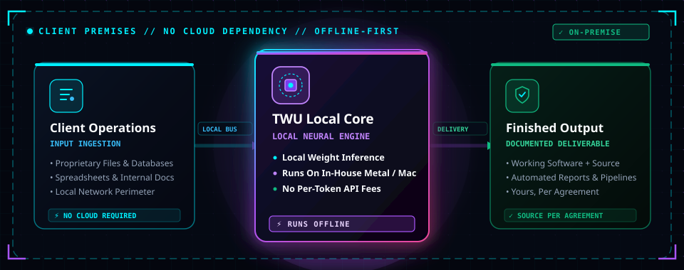

Private Software &
Local AI Systems.
We build private software and local AI systems that run on your own hardware, so your data stays with you and you never pay per seat. Offline-first by design.
- Own your tools. No per-seat licenses. Source code and documentation under your agreement.
- Keep your data home. Designed to run on your own hardware, offline by default.
- Know what is true. Every factual statement here is matched to company records by script.
Registered in SAM.gov. A new company. What is not done yet is listed here.
Registration
- SAM.gov
- Active, renewal due 2027-10-27
- Unique Entity ID
- FAQ6J93X5NL3
- CAGE code
- 26X75
- SBA SBC Control ID
- SBC_002683059
Classification
- Primary NAICS
- 541511, Custom Computer Programming
- Entity
- TWU LLC, Arizona limited liability company
- Location
- Mesa, Arizona
- Full code lists
- Capability statement
Not yet done
- CMMC Level 1 self-assessment: planned, not completed
- No facility security clearance held
- No FedRAMP authorization held
- Past federal performance: none yet
We would rather you read this here than discover it later. "Private" and "offline" describe design intent, not a security certification.
Work you can inspect.
38 public repositories on GitHub as of 2026-10-13. Status is stated plainly.
tiny_dancer (prototype)
An offline agent on a 20B-parameter open-weight model that runs on a laptop with an 8 GB GPU. 617 regression checks pass; full native qualification has not passed.
Karl (AGPL-3.0)
An offline LLM lab: no cloud calls, a JSONL trace of every generation, and local search over PDFs, Word files, code and CSV.
Quick_Guide
Local semantic PDF search that shows the page an answer came from.
Working with agencies and primes.
Open to
- SBIR/STTR topics
- Commercial solutions openings
- Other transaction agreements
- Teaming and subcontract inquiries
These are offers to talk, not claims of experience.
Pilot offer
A small, scoped pilot of the private document tools or related software work, with scope, schedule and terms agreed in writing before work starts.
Status
- One NSF SBIR/STTR Phase I Project Pitch submitted 2026-11-05; no invitation or award
- DSIP account: planned, not created
- Small Business: Y per the SAM.gov size representation; Small Disadvantaged Business: No
What we offer.
All four services are offered now. TWU is a new company with no paying clients yet, and the AI tools are prototypes.
Custom Internal Tools
Internal tools built around how your operation actually runs, for example scheduling, inventory and client registries, designed to work offline first. Source code and documentation would be delivered under the terms of your agreement.
Offline-first design
How our systems are designed to run on your premises without depending on cloud services. This diagram shows the design target; individual tools are at prototype stage, as the capability statement spells out.

Every factual statement here is checked.
A script, with no AI model involved, matches the factual statements on this site to our own company records. It is a consistency check against records we keep, not an outside audit, and anything it cannot match is labeled.
Why TWU exists.
I founded TWU LLC on a simple principle: computers are meant to empower people, not entrap them in perpetual software subscriptions.
You shouldn't have to bend your workflows around rigid corporate software. We craft bespoke tools that adapt to you, run on the hardware you already own, and remain under your direct control.
Background
Ethan Kilmer is the sole member and owner. Background: about six years in healthcare (licensed nursing assistant and staffing coordinator), about two years of software development, and hands-on Linux and multi-machine systems work. B.A.S. in Data Analytics and Programming at Mesa Community College, in progress.
// AT A GLANCE
• Entity: TWU LLC, sole-member Arizona LLC
• Base: Mesa, Arizona
• Design approach: offline-first
• Deliverables: source and documentation under your agreement. No cloud lock-in by design.
Start a conversation.
Have an operational bottleneck or a software bill you want to cut? Email us. Private AI work starts as a small, scoped pilot.